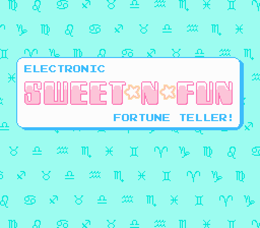
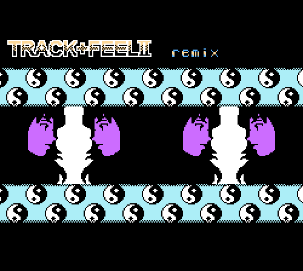

Projects
Below are selected artworks, code, and other projects about love + computers + nostalgia by Rachel Simone Weil. Written work can be found here.
- ConnectedNES (2016)
A one-of-a-kind project that bestows the power of WiFi to the 8-bit NES game console. [More]
- The dealwithit bot (2016)
A web app that uses Microsoft’s Face API to detect up to 64 human faces in a photo and slides a pair of pixel shades on all of them. [Github] [Live demo] [Kill Screen write-up]
- Social Media Bros. (2015)
The precursor to ConnectedNES, Social Media Bros. is a modified disassembly of the 8-bit classic that displays in-game twitter notifications on the original game hardware. [More]
- honeysuckle (2015)
A Windows 95-inspired autobiographical game about childhood and loss inspired by Theresa Duncan’s 1990s CD-ROM games. [itch.io] - Computers Are Easy, Love is Kind (2015)
A simple NES homebrew demo made on the occasion of the US Supreme Court ruling on marriage equality. [Github] - Gateway: A shrine / a coffin (2015)
A mixed-media sculpture that serves as a reflection on childhood and the loss of obsolete computer data. - Animal Crossing (Sweet-N-Fun hack) (2015)
I made my own NES ROM playable inside of Animal Crossing for the Nintendo Gamecube. True Nintendo-game-ception. [YouTube] - Monkey Fortunetell (2014)
A glitchy, trippy fortune teller made in collaboration with Nathalie Lawhead. - Electronic Sweet-N-Fun Fortune Teller (2014)
A love horoscope game for the NES. [itch.io]
 - TRACK+FEEL II (2012)
A cooperative, interactive glitch-art and music creation tool for the NES. [itch.io]
 - TRACK+FEEL II EP (2012)
A collection of remixes of the music from TRACK+FEEL II, featuring Slime Girls, GANGWORMS, MicroD, kidkoexist, and chalkboards. [bandcamp] - Hello Kitty Land (2003)
A mod of Super Mario Bros. that replaces the characters with those from the Sanrio universe. Also features modified levels, color palettes, and game mechanics.